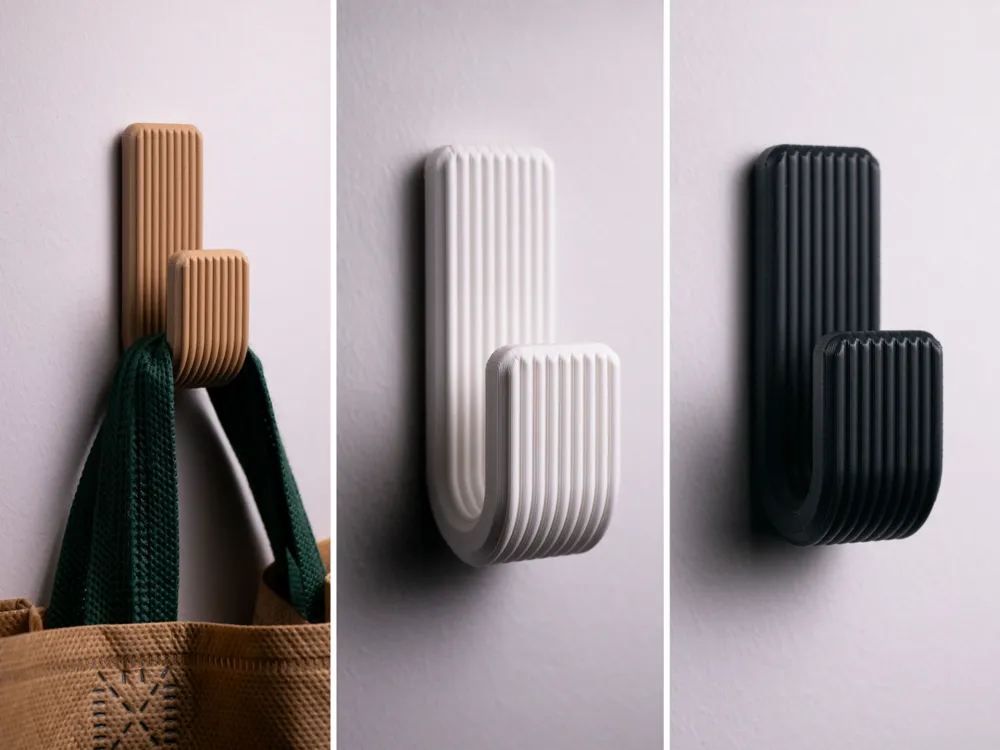
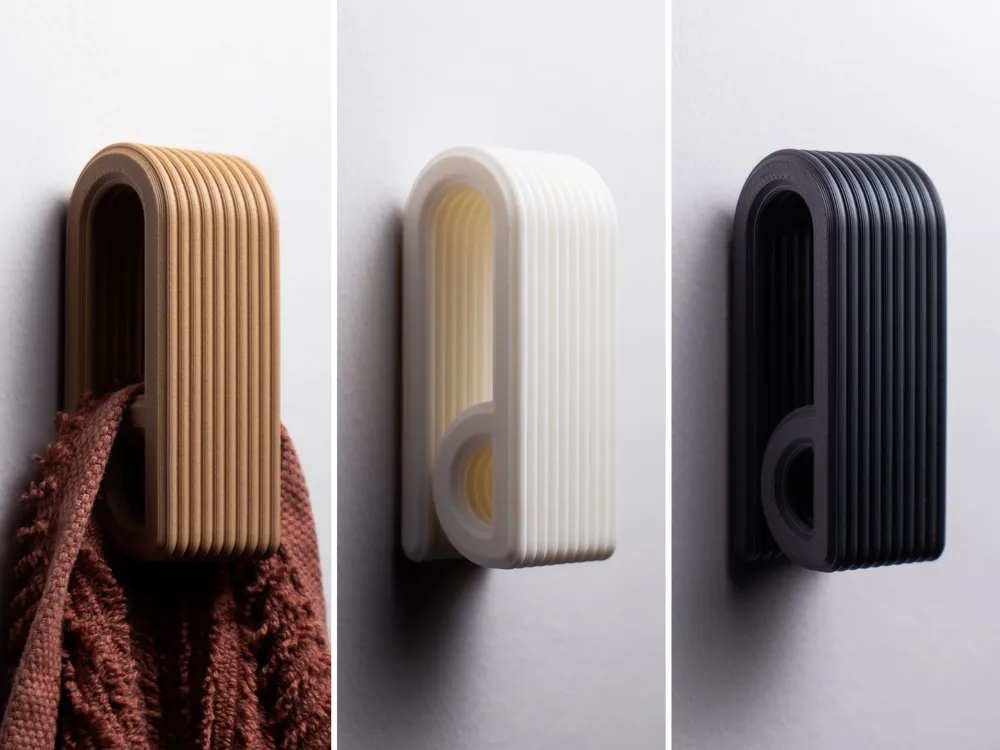
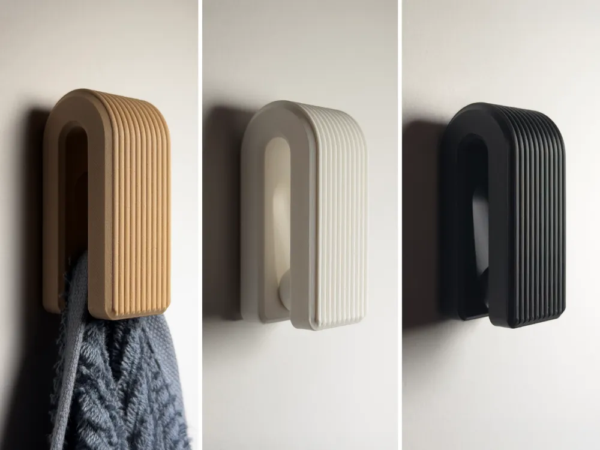
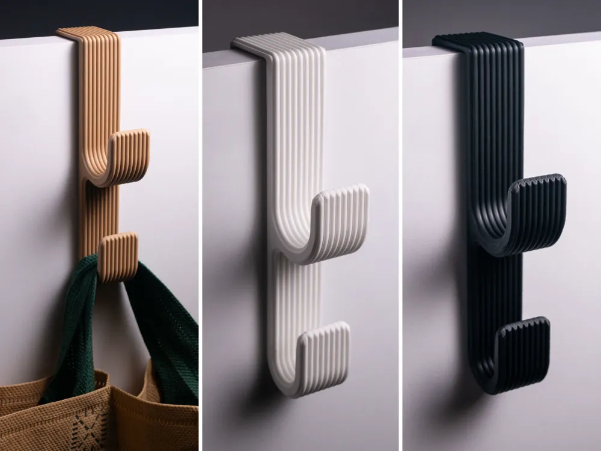
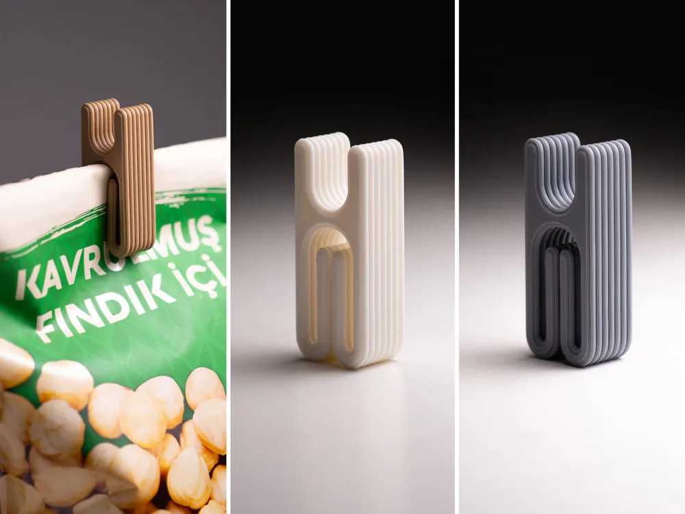
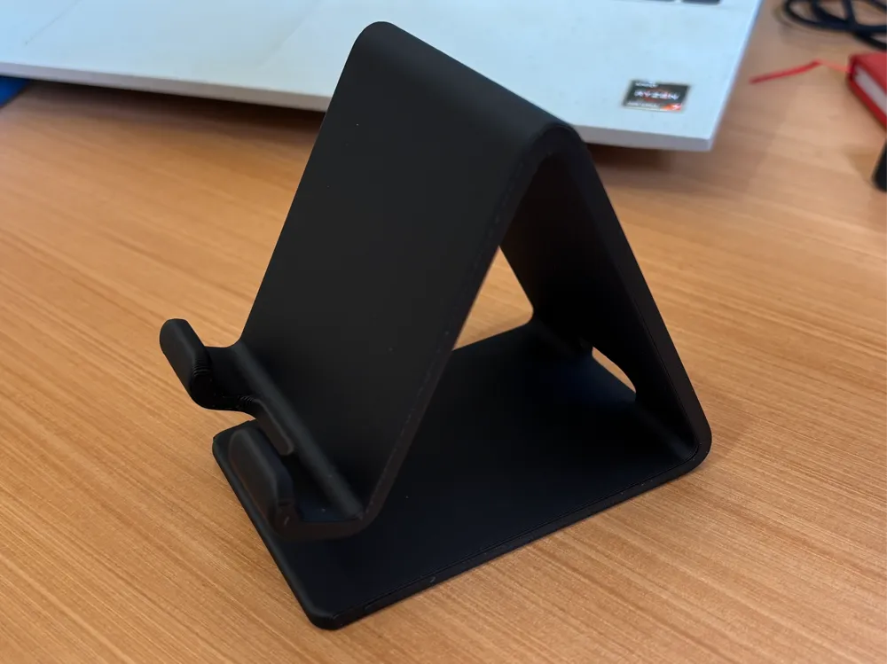
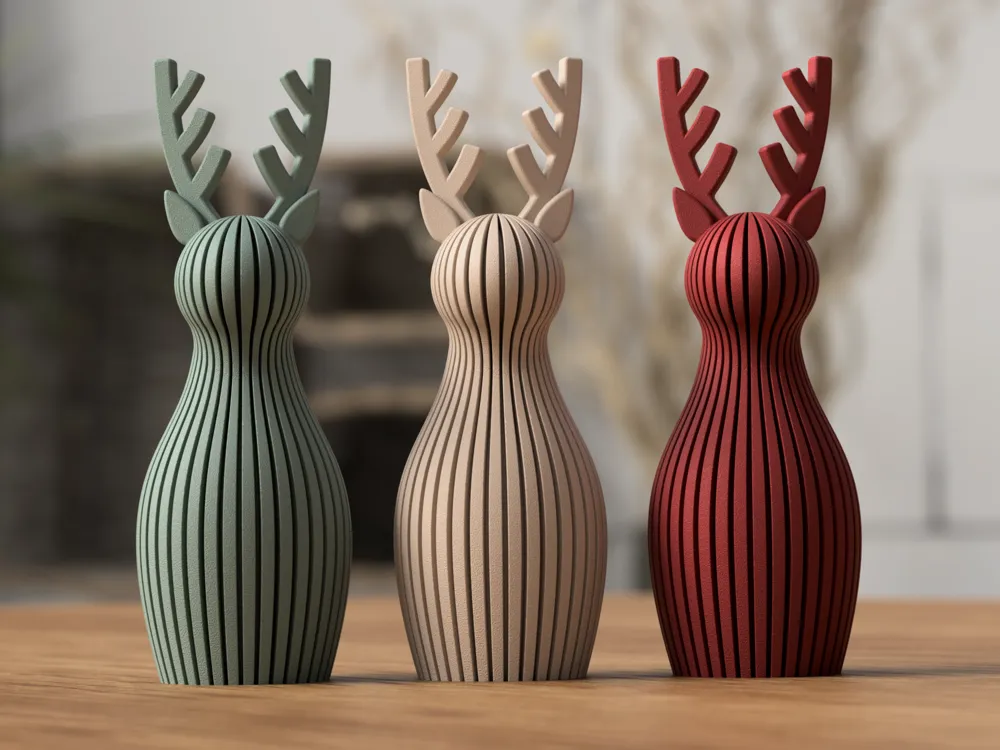
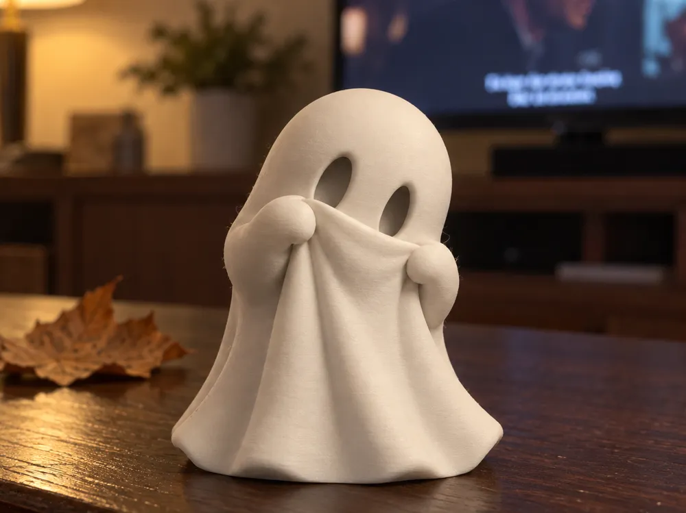

BoligEn enkel knage. En tydelig rytme.Vælg variantSTYKK / Kollektionen
Find dit STYKK.
Bolig · Tilbehør · ObjekterTing, der holder. Ting, der samler.
Og ting, der giver rummet karakter.
Vejledende priser pr. STYKK.
Detaljer og endelig pris aftales før bestilling.


BoligEn blød bue til det, der skal hænge.Vælg variant
BoligPlads til mere. Lige ved døren.Vælg variant
TilbehørEn lille ting, der samler.Vælg variant
TilbehørGiv skærmen en fast plads.
ObjekterRibber, kurver og et lille gevir.Vælg variant
ObjekterEn lille figur med sit eget udtryk.